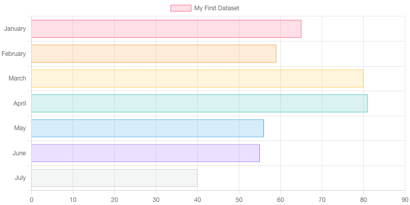

Yellowstone Visitor Guide: Plan Your Trip
Commerce
Mountain
Recreation
Restroom
Service
Tourism
Transportation
Water
Choose Filtering Method
By POI Name
By Subcategory
×
Points of Interest
Daily Trip Schedule

Reset
Save